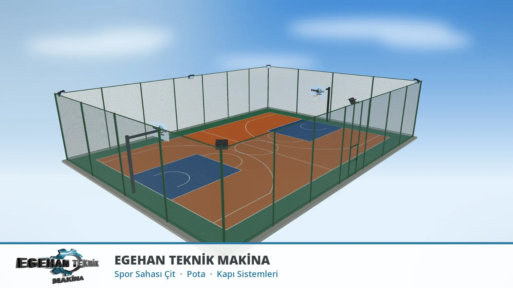
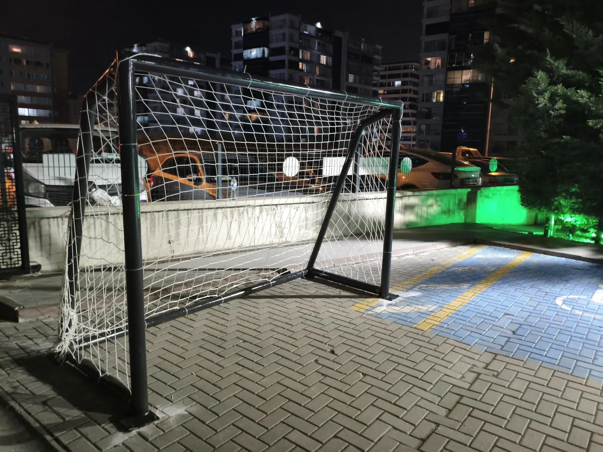
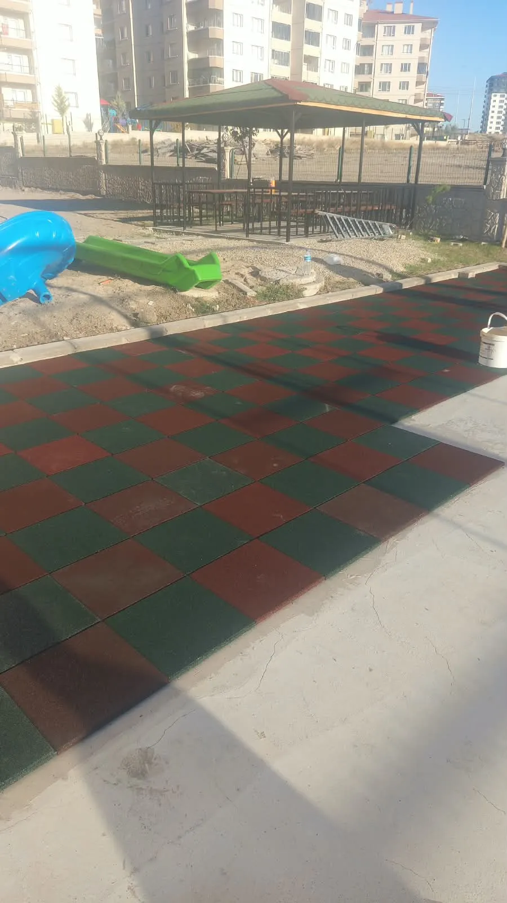
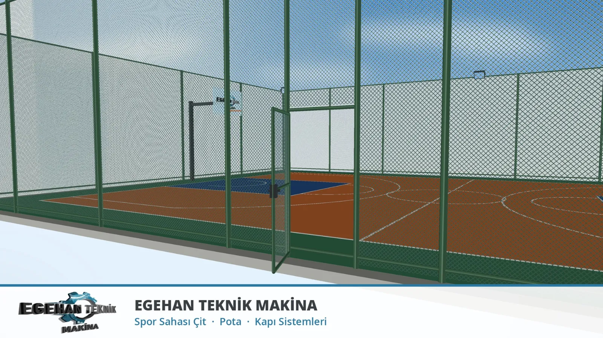
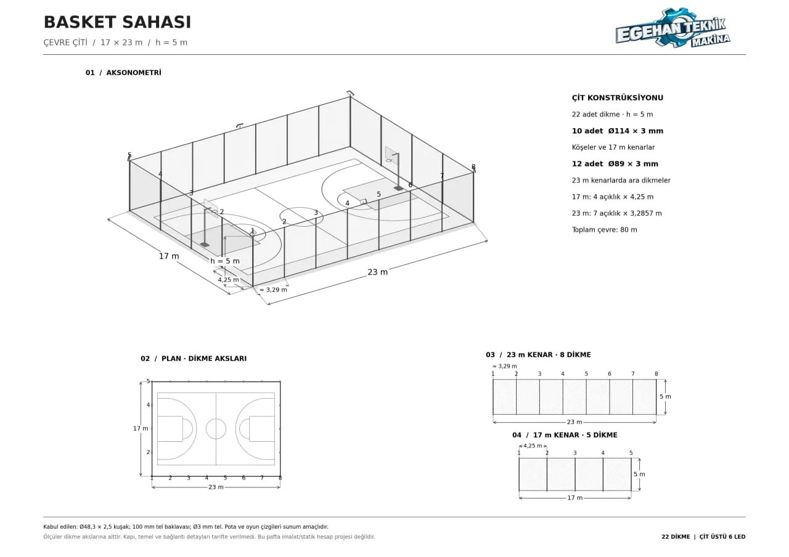

Siteler İçin Basket Sahası, Futbol Sahası ve Oyun Parkı
Sitenizin, apartmanınızın ya da işletmenizin boş alanını spor sahasına ve oyun parkına çeviriyoruz. Basket sahası, futbol sahası (halı saha) çevre çiti, pota, kale ve oyun parkı işlerini Ankara'nın batı hattında; Sincan, Temelli, Malıköy, Alcı ve Törekent'te yapıyoruz. Önce sahayı 3D olarak çizer, yönetimin onayından sonra imalat ve montaja geçeriz.

Basket Sahası Yapımı
Siteler ve apartmanlar için basket sahası yapıyoruz. Sahanın çevre çitini, dikmelerini ve potalarını kendi atölyemizde imal eder, yerinde monte ederiz. Basketbol sahası çiti, pota direği ve giriş kapısı tek elden çıkar; başka firma aramanıza gerek kalmaz.
- Basket sahası çevre çiti (tel örgü veya panel)
- Çit dikmeleri ve çelik direk imalatı
- Özel imalat basketbol potası
- Saha giriş kapısı
- Mevcut sahalarda çit yenileme, onarım ve boya

Futbol Sahası ve Halı Saha Çiti
Site içi futbol sahası ve halı saha işlerinde çevre çiti, top tutma filesi direkleri ve kale imalatı yapıyoruz. Kaleyi atölyemizde kendimiz üretiyoruz; fotoğraftaki kale bir sitenin spor alanı için yaptığımız iştir.
- Futbol sahası ve halı saha çevre çiti
- File direği ve top tutma filesi taşıyıcısı
- Özel imalat futbol kalesi
- Çok amaçlı (basket + futbol) saha çiti

Oyun Parkı Yapımı
Sitelerin çocuk oyun parklarını baştan sona düzenliyoruz. Oyun parkı zeminine kauçuk kaplama, salıncak, bank, çardak ve çevre çiti gibi işleri birlikte yapıyoruz. Fotoğraftaki iş, bir sitenin oyun parkı alanında yaptığımız kauçuk zemin ve çardak uygulamasıdır.
- Oyun parkı kauçuk zemin kaplaması
- Salıncak iskeleti ve bahçe bankı imalatı
- Site çardağı ve oturma alanı
- Oyun parkı çevre çiti ve kapısı
Önce 3D Çizim, Sonra İmalat
Yönetim kuruluna ya da site sakinlerine sunabilmeniz için sahayı önce 3D olarak çiziyoruz. Dikme yerlerini ve çit açıklıklarını gösteren teknik çizimi de hazırlıyoruz; herkes işin bitmiş halini iş başlamadan görüyor.


Sık Sorulan Sorular
Sitemizin boş alanına basket sahası ya da futbol sahası yapılabilir mi?
Evet. Alanı yerinde görür, ölçüsünü alır ve sahayı önce 3D olarak çizeriz. Yönetim çizimi onaylayınca çevre çitini, direkleri, potayı veya kaleyi kendi atölyemizde imal edip montajını yaparız.
Yönetim kuruluna sunmak için çizim hazırlıyor musunuz?
Evet. Sahanın 3D görünümünü ve dikme yerlerini gösteren teknik çizimi hazırlarız. Site sakinleri ve yönetim, iş yapılmadan önce sonucu görür.
Oyun parkı alanını da düzenliyor musunuz?
Evet. Oyun parkı zemin kaplaması, salıncak, bank, çardak ve çevre çiti gibi işleri tek elden yaparız.
Sitenizin Alanının Fotoğrafını Gönderin
Spor sahası ya da oyun parkı yapılacak alanın fotoğrafını WhatsApp'tan gönderin; yerinde keşfe gelip sahayı sizin için çizelim.